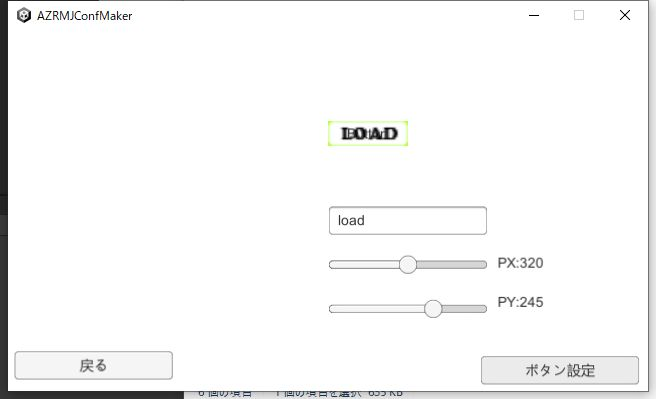
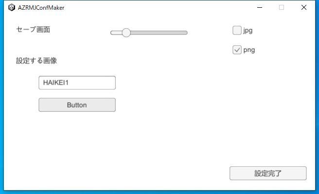
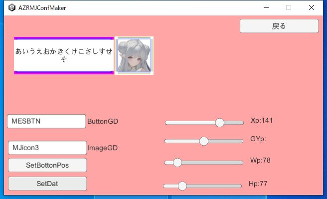
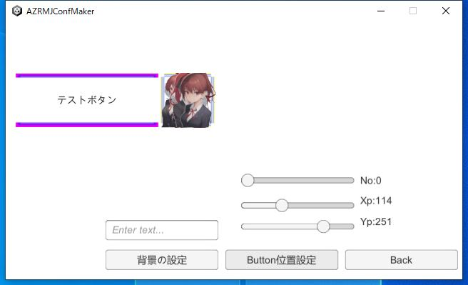
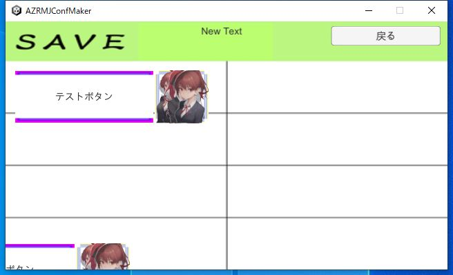
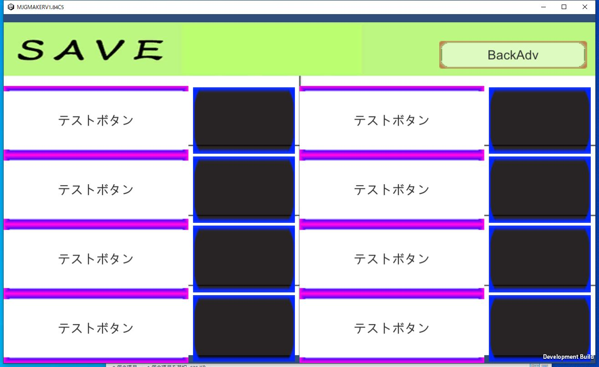

|
セーブ画面の設定をやります、セーブ画面は基本的にデフォルトでいけます ですが、細かく変更することで自分好みの画面にできます まずは、背景を変更してみましょう 各種画面の設定で、メニュー画面の設定から設定します セーブ画面設定で今回は背景を設定します |  |
|
BackBT設定でセーブ画面設定で戻るボタンの設定もできます PXとPYで戻るボタンの位置を設定します。 また、フィールドに入れた文字の画像を当てはめます。 |  |
|
メニューボタン設定でメニューボタンのパターンを設定します。 メニューボタンはボタン画像と、セーブ時の画面の画像が設定されます。 ButtonGDのフィールドがボタン画像、ImageGDのフィールドが画面側の画像です 画面側の位置と幅と高さを設定します、これが基本セットになります。 設定したらSetBottonPosでセットで作った物の位置を設定します |  |
|
SetBottonPosですが、フィールドに入れた画像名で画像を背景にできます 設定しておいた背景画像を参考に、セットで作られたものをXpとYpで移動させます。 Noはその画像の保存で使われて、Noに合わせてセーブボタンのナンバーが決定されます 位置が決まったらButton位置設定で位置を固定します |  |
|
ボタンパターン設定で先ほどまでで設定したボタン及び、背景をロードして画面に配置します ロード画面はセーブ画面のボタンとパターンをそのまま使うので、背景だけ設定したら終了です。 一通り設定したら、セーブして、本体側に移動します。 |  |
|
本体側ですが、ZipかAssetsで先ほどまでに設定した物を圧縮して使います。 圧縮先は、システム画像としてスタート時に設定する画像の場所に入れて、読み出し設定もそちらに合わせて変更されます よって、JSでの動作が基本になります。ZipやAssetsでの動作のやり方は少し前にやりましたので、そちらを参考に動かしてみてください |  |